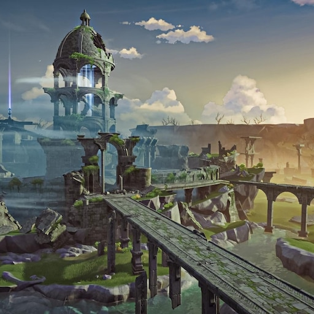
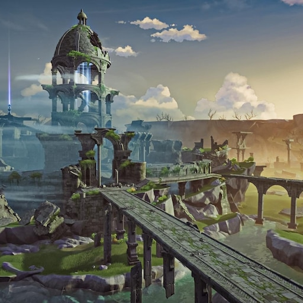

A capital da liberdade, ao nordeste de Teyvat. Entre cadeias de montanhas e as vastas planícies, o vento da liberdade traz consigo o aroma de Dandelion e acaricia o lago de Cidra, trazendo à cidade, no meio do lago, a bênção de Barbatos.
Mondstadt é uma das sete nações de Teyvat, e a primeira nação em que o Viajante começa a busca por seu irmão. É a cidade-estado que venera Barbatos, o Arconte Anemo.
É a nação que adora Barbatos, o Arconte Anemo
 

Mondstadt de Decarabian, também chamada de Antiga Mondstadt, foi o local original da nação de Mondstadt. Foi criada pelo Deus das Tempestades, Decarabian, que a construiu em um vale profundo e criou uma grande torre de onde governava. Seu reinado terminou dois mil e seiscentos anos atrás, quando seu povo se rebelou contra ele, o levando à morte. Após isso, o novo Arconte Anemo, Barbatos, levou o povo para o Lago de Sidra, onde fica a atual Cidade de Mondstadt.
Durante o Cataclismo, quinhentos anos atrás, Dvalin se refugiou na torre de Decarabian para se recuperar dos ferimentos que recebera durante a batalha contra Durin. Nos anos seguintes, após o povo de Mondstadt se esquecer de Dvalin, a área da antiga Mondstadt ficou conhecida como a Toca de Stormterror.
Decarabian, também conhecido como Deus das Tempestades, o Senhor da Torre e um dos Reis de Gelo e Geada, foi um deus que viveu há mais de 2600 anos e fundou a nação de Mondstadt. Ele protegia com unhas e dentes sua capital, localizada hoje na Toca de Stormterror, e a cercou com uma barreira de tempestade após Andrius declarar guerra contra ele.
Decarabian era metódico com a organização de sua cidade e, para ele, seu governo era bom. Ele não percebia que seu povo não estava vivendo feliz dentro da prisão de ventos e que queriam mais contato com o mundo do lado de fora da barreira. O povo o enxergava como um tirano e eventualmente se rebelaram contra ele, buscando a liberdade, e trazendo um fim ao seu reino. Com sua morte nas mãos dos rebeldes e com o sacrifício voluntário de Andrius, o espírito sem nome do vento aliado da causa rebelde ascendeu à divindade, tornando-se Barbatos, o Arconte Anemo.
Pouco se sabe sobre a origem de Decarabian ou sua história antes da guerra com Andrius. No ápice de seu governo, seu território se espalhava por toda a área da Montanhas das Coroas e das Terras Altas das Lamentações, com uma grande cidade estabelecida em volta do Jardim de Cecilia
Baseado no que restou hoje da arquitetura, a cidade costumava ter saídas para o nordeste e noroeste; a saída nordeste agora está bloqueada por uma montanha, enquanto o canal a noroeste foi barrado, separando-o do resto do rio. Isso sugere que a cidade tinha contato com regiões inexploradas de Teyvat, mas foram fechadas após o início da guerra entre Decarabian e Andrius e a criação da barreira.
O conflito entre Andrius e Decarabian foi apenas um dentre muitos que ocorreram durante a Guerra dos Arcontes. Nos livros de história de Mondstadt, esse período da história ficou conhecido como A Era dos Reis, com os dois deuses sendo chamados de Reis de Gelo e Geada. Não se sabe quando a guerra teve início, mas 3000 anos atrás ela já havia começado, o que significa que os dois batalharam por mais de 400 anos antes de a guerra chegar ao fim há 2600 anos.
Durante a Era dos Reis, a Terra do Vento não passava de um deserto congelado devido aos poderes de Andrius. Para proteger sua cidade da nevasca, Decarabian a envolveu em uma barreira de vento que impedia, tanto a entrada, quanto saída dela e era tão forte que nem Andrius, com seu imenso poder, sequer era capaz de arranhá-la Do ponto de vista de Decarabian, ele havia dado ao seu povo um refúgio seguro, livre daquele frio devastador
Para seu povo, entretanto, ele era um governante cruel e egoísta que os havia trancado dentro da cidade. Decarabian controlava tudo na cidade, até mesmo onde cada cidadão iria morar e até mesmo baniu certos acordes e melodias que pudessem indicar qualquer sinal de resistência. Altamente desconectado de seu povo, Decarabian não parecia agir por maldade, mas apenas não entendia a humanidade e suas necessidades. Para ele, seu povo o amava tanto quanto ele os amava, embora sua compreensão do amor estava longe de ser como as dos humanos. Em uma determinado momento, ele tomou uma humana, Amos, como sua amante. Entretanto, logo ela percebeu que ele não a amava do mesmo jeito que ela amava a ele. Quando olhava para seus súditos lá embaixo da torre e os via curvados, ele acreditava que o estavam saudando, quando na verdade apenas se curvavam devido aos fortes ventos da tempestade que os obrigava.
2600 anos atrás, a frustração com o governo de Decarabian fez nascer a semente da resistência. Para não serem vistos pelo deus que tudo controla, as pessoas com desejo da liberdade costumavam se cumprimentar usando a Flor do Vento como um símbolo. Eventualmente, as sementes floresceram e transformaram-se na rebelião. Foi liderada por um grupo determinado a desafiar Decarabian e libertar Mondstadt, que consistia no Bardo Sem Nome, o elfo ou espírito do vento, a antiga amante de Decarabian, Amos, um(a) cavaleiro(a) de identidade desconhecida e um andarilho, o Guerreiro Ruivo.
Alguns anos antes da rebelião, o Clã Gunnhildr saiu da cidade por se sentir desiludido com a forma com que Decarabian governava. Por terem dificuldades para sobreviver fora da cidade devido à nevasca e ao frio intenso, as orações de Gunnhildr foram recebidas por um débil espírito do vento, que conseguiu acumular poder suficiente para criar-lhes um abrigo. Com a ajuda que receberam, o clã passou a ter mais fé no espírito e essa fé, em retorno, o fortaleceu mais ainda. Embora esse espírito do vento não tenha sido identificado, acredita-se ser Barbatos. Quando a rebelião começou, Gunnhildr participou juntamente com seu clã a favor dos rebeldes.
Em algum momento da guerra, provavelmente entre a partida do Clã Gunnhildr e o começo da rebelião, Andrius chegou à conclusão de que a vida em Mondstadt não seria capaz de florescer enquanto seus poderes invocassem as nevascas que assolavam a terra. Combinando isso com o fato de que ele não se achava capaz de ser um governante amoroso que poderia cuidar da humanidade, o que era esperado de um arconte nessa época, ele percebeu que se tornar um arconte estava além de suas capacidades. Andrius, então, escolheu a morte. Sua forma física se dissipou permitindo que seus poderes fluíssem para a terra com a intenção de protegê-la e acabando, finalmente, com as nevascas que assolavam a região. Não se sabe se Decarabian estava ciente da morte de seu maior inimigo ou não, mas a barreira criada por ele ainda estava ativa no início da rebelião.
Os rebeldes venceram e Decarabian finalmente havia sido morto causando uma explosão que destruiria parte de sua torre. Após sua morte, a barreira se dissipou, revelando o céu azul que os rebeldes puderam ver pela primeira vez em suas vidas. Essa vitória, entretanto, veio com um preço: Amos e o Bardo Sem Nome estavam entre aqueles que morreram durante a luta contra o Deus das Tempestades.
Com os dois deuses da região de Mondstadt mortos, o espírito do vento ascendeu à divindade como Barbatos, o Arconte Anemo dos Sete. Barbatos usou seus recém recebidos poderes para tomar a forma do Bardo Sem Nome, para que ele pudesse tocar a Lira como o garoto tocava, e pode ter escolhido o arco como sua arma em memória de Amos. Enquanto Gunnhildr celebrava a ascensão de Barbatos, o Guerreiro Ruivo não estava tão animado com o desenrolar da história e resolveu seguir seu próprio caminho.
Barbatos, com seus ventos, removeu toda a neve e gelo da terra enquanto a remodelava. Ele e seu povo se mudaram para o Lago de Sidra para criar a nova Cidade de Mondstadt, abandonando a antiga cidade de Decarabian.
Quando o reino de Khaenri'ah se preparava para a guerra contra os deuses, eles desenvolveram o Cultivador da Terra, um protótipo de Guarda da Ruína com grande poder de combate. O Cultivador da Terra entrou em combate com a forma espiritual de Andrius, onde foi severamente danificado pelo Rei dos Lobos e fugiu para a antiga cidade de Mondstadt. Lá, ele fez da torre de Decarabian seu abrigo, onde, por aproximadamente um ano, ele atacava todos que se aproximavam da área. A população de Mondstadt da época, assustada com os mísseis da criatura e sem entender sua tecnologia, acreditou que tudo isso era obra de Decarabian, dando a estes incidentes o nome de "Fúria do Tirano". Após acabar as baterias do Cultivador e cessar seus ataques, a população chegou à conclusão de que os ataques de fogo não poderiam ser obra do Deus das Tempestades.
Quinhentos anos atrás, após ser gravemente ferido e envenenado pelo Dragão Durin, Dvalin fez da torre de Decarabian sua toca, enquanto procurava abrigo para se recuperar. Quando Dvalin acordou e percebeu que Mondstadt havia esquecido dele e o temia, combinado com a dor causada pelo veneno, ele foi manipulado pela Ordem do Abismo a pensar que Barbatos e Mondstadt o haviam traído. A população lhe deu o nome de Stormterror (Tempestade do Terror) devido ao medo que sentiam de seus ataques à Mondstadt e a antiga cidade de Mondstadt ficou conhecida como a "Toca de Stormterror".
Durante os eventos do Prólogo das Missões do Arconte, o Viajante, Venti, Diluc e Jean partiram para a Toca de Stormterror para quebrar os selos do vento criados pela Ordem do Abismo para que pudessem libertar Dvalin do controle mental.
O Clã Lawrence, também chamado de Casa Lawrence, foi um dos clãs proeminentes em Mondstadt depois que Barbatos ascendeu, junto com o Clã Gunnhildr, Clã Ragnvindr e o Clã Imunlaukr.
Depois que a aristocracia foi estabelecida, eles se tornaram seu clã principal e, na época em que a aristocracia se tornou corrupta, eram os principais responsáveis pelo governo da Cidade de Mondstadt. Eles são atualmente mal vistos entre os cidadãos de Mondstadt, com muitos ficando agressivos com a simples menção do clã.
Venerare era a líder do Clã Lawrence quando a nova Mondstadt foi fundada e ela guiou o povo a construir uma estátua na praça para comemorar a descida de Barbatos, na qual um juramento foi feito pelo líder de todos os clãs.
Durante o tempo em que o povo de Mondstadt adorava os deuses de Anemo e do Tempo juntos, o clã Lawrence reencenaria sua vitória sobre o deserto congelado.
Os nobres caçavam como uma forma de mostrar sua força no mundo natural, compartilhando os despojos com o povo por benevolência. Esta tradição é provavelmente baseada na história e cultura do clã Lawrence. Eles foram ensinados pelos magos reais, que mantiveram o controle da história e foram responsáveis por incutir virtude nos nobres.
Gradualmente, a visão do Clã Lawrence sobre si mesmo mudou de conquistadores para soberanos e reis, fazendo com que eles descessem o caminho da depravação e dando início ao período aristocrático tardio.
Eles derrubaram a estátua de Barbatos que colocaram na praça há muito tempo para se livrar do juramento escrito lá, e os magos reais abandonaram seus deveres para com os nobres, não falando mais de história ou do juramento. Eles acreditavam que os nobres deveriam usar apenas espadas, abandonando sua herança de usar arcos e também não usar lanças, considerando tanto armas para plebeus quanto gladiadores.
O clã Lawrence também mudou a forma como os jogos de gladiadores funcionavam, mudando-os de cerimônias religiosas para esportes sangrentos para sua diversão.
Quando a terra clamou por Barbatos, ele viu o dano causado por aqueles que ele havia deixado no comando e voltou a Mondstadt mais uma vez para trazer de volta a liberdade. Ajudando uma escrava chamada Vennessa, a dupla conseguiu levar o povo à revolta. No entanto, Barbatos deu um passo além ao escrever um documento falso no qual o Clã Lawrence venderia Mondstadt para Morax. Os soldados que serviam ao clã, temendo que eles próprios fossem tratados como escravos, começaram a apoiar a rebelião de Vennessa, deixando o clã com muito poucos soldados que eram leais à sua causa.
O clã Lawrence foi finalmente derrubado pela rebelião de Vennessa, e eles foram forçados pelo povo de Mondstadt a deixar a cidade e nunca mais retornar. Por fim, alguns membros do clã perceberam que haviam traído o povo, e não o contrário.
O clã mudou-se para outra área em Mondstadt, mas a localização atual permanece desconhecida. Eles costumavam entrar em conflito com os locais, o que resultava na chegada dos Cavaleiros de Favonius para mediar, mas com muito pouco efeito.
Os descendentes do clã Lawrence nos dias atuais frequentemente enfrentam estigmas e são considerados uma ameaça social; antes de se juntar aos Cavaleiros de Favonius, Eula foi forçada a caçar e cozinhar para si mesma, já que quase todas as lojas recusavam seu dinheiro.
Quase na época atual, Eula se candidatou aos Cavaleiros, causando um alvoroço tanto no povo comum quanto no Clã Lawrence. Membros do clã confrontaram Eula sobre sua decisão de se juntar fora do quartel-general dos Cavaleiros. O Grande Mestre Varka e a Grande Mestre Interina Jean permitiram que ela se juntasse, já que ela era talentosa em combate e ambos consideraram um desperdício recusar alguém habilidoso como ela. O clã passou a denunciar Eula como traidora.
Algum tempo depois de Eula se juntar, seu tio, Schubert, conspirou com os Fatui para reivindicar Mondstadt e trazê-la de volta sob o governo "adequado". Essa trama foi frustrada pelo Viajante e pela própria Eula, com Schubert levado sob custódia.
Espinha do Dragão, também chamada de "Montanha Nevada" é uma região da nação de Mondstadt.
É uma vasta montanha, engolfada por ruínas antigas e áreas cobertas de neve, e também contendo os restos do dragão Durin. A montanha era historicamente conhecida como Vindagnyr antes da queda de Durin.
Existem algumas peculiaridades em como a neve se acumula, mas nunca derrete na montanha. Devido ao seu frio extremo, a Espinha do Dragão também é um dos lugares mais perigosos de Mondstadt.
A montanha onde estão os restos mortais de Durin, o dragão maligno que uma vez lutou contra Dvalin, é chamada de Espinha do Dragão. O ambiente hostil criado pela neve e frio, sangue venenoso e monstros fazem com que pouco alpinistas sejam vistos aqui.
Há evidências de uma civilização habitando a montanha antes de Durin. Muitos dos vestígios arqueológicos estão centrados na Cidade na Neve - Palácio Antigo. Também há registros contidos em Inscrição Antiga; e nas descrições das armas Estrela de Prata Enterrada na Neve, bem como o catalisador Fruto do Sabugueiro; e nos itens Caixa da Princesa, Caixa do Sacerdote e Caixa do Escriba; bem como afrescos dentro da Sala do Mural onde a Estrela de Prata Enterrada na Neve é encontrada.
Juntos, eles contam de um reino, uma princesa dotada com o poder de prever através de visões e pinturas, e de uma tragédia ou queda desse reino. A queda é provocada pela Ponta do Céu Frio que cai e destrói a árvore de Linhas Ley prata na montanha - isso faz com que a mudança no clima de verde para congelada. Artefatos encontrados na Espinha do Dragão contam a história da Princesa e do povo daquela época, e a história de um forasteiro encarregado da arma Estrela de Prata Estrelar - quando o forasteiro retorna de sua busca, ele encontra a cidade morta e abandonada e deixa a arma em segredo câmara.
As mensagens decodificadas ("Registro com Nº de Série") encontradas em Guardas de Ruína quebrados na região também podem estar relacionadas, mas também podem estar relacionadas à queda de Khaenri'ah, de onde os Guardas de Ruína se originam.
{kind=link}
{kind=link}
{kind=link}
{kind=link}
{kind=link}
{kind=link}
{kind=link}
{kind=link}
{kind=link}